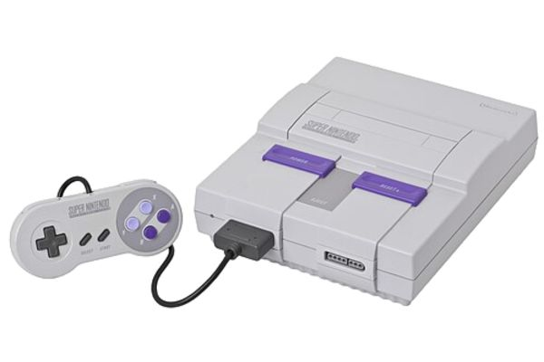
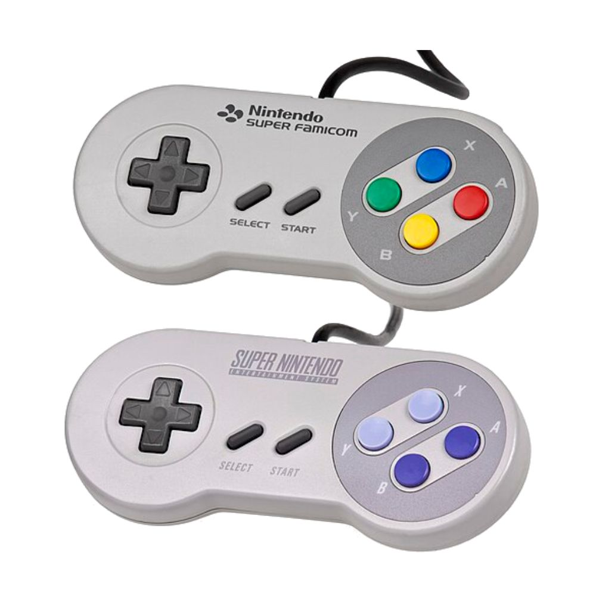
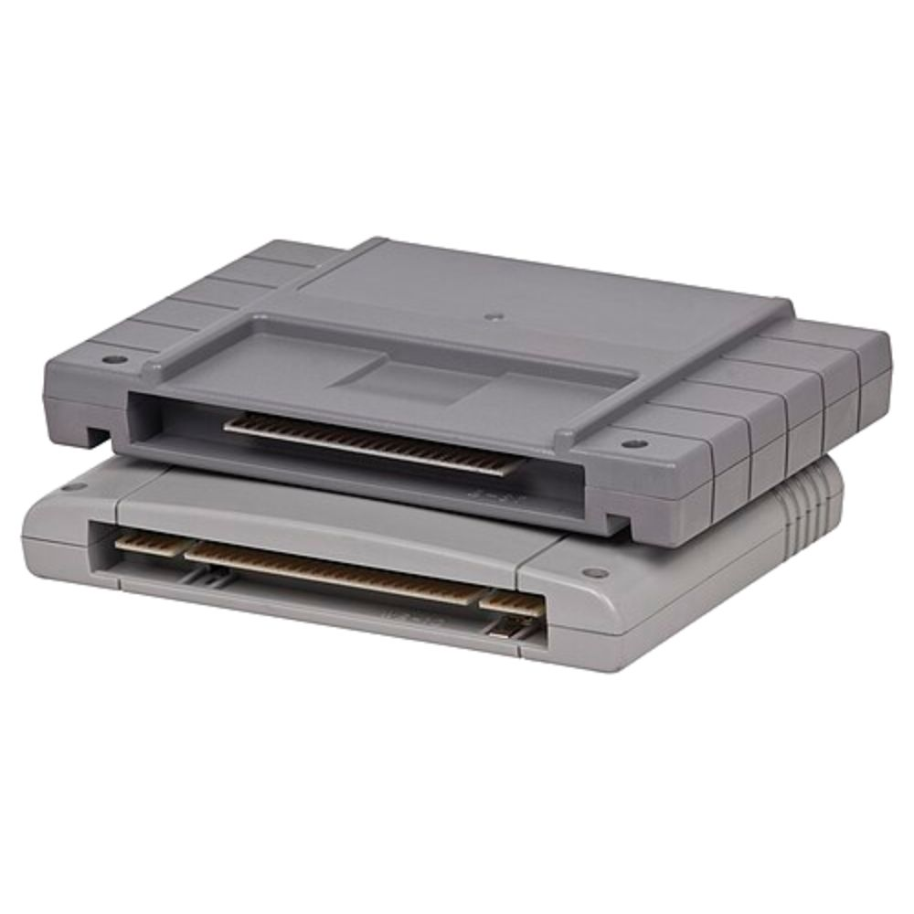

Super Nintendo

O Super Nintendo Entertainment System (ou apenas Super Nintendo, abreviado SNES; no Japão Super Famicom, abreviado SFC, em japonês: スーパーファミコン, transl. Sūpā Famikon) é um console de videogame de 16-bits de quarta geração desenvolvido pela Nintendo, que foi lançado no período de 1990 à 1993 em várias parte do mundo. No Japão foi adotando o nome abreviado do seu antecessor, o Famicom (de Nintendo Family Computer) sendo chamado Super Famicom. Na Coreia do Sul, é conhecido como Super Comboy e foi distribuído pela Hyundai Electronics. Embora cada versão seja essencialmente as mesmas, várias formas de bloqueio regional impedem que as diferentes versões sejam compatíveis entre si.
O Super Nintendo Entertainment System é o segundo console doméstico da Nintendo, sucessor do Nintendo Entertainment System (NES). O console apresentou gráficos e recursos de som avançados em comparação com outros consoles na época. Além disso, o desenvolvimento de uma variedade de chips de aprimoramento (que foram integrados em placas de circuito) ajudou a mantê-lo competitivo no mercado. Enquanto brutos gráficos tridimensionais raramente tinham sido vistos antes em consoles domésticos, utilizando o chip Super FX começando com Star Fox em 1993, o SNES foi capaz de rodar jogos com gráficos tridimensionais suaves e mais detalhados do que era anteriormente possível. Isso despertou interesse mais difundido em gráficos de polígono na indústria, ajudando a inaugurar os gráficos 3D, como pode ser visto na quinta geração de consoles de videogame.
História
Tudo começou quando a NEC decidiu competir com o famoso NES, lançando o videogame TurboGrafx-16 em Outubro de 1987. Já a SEGA lançou o videogame Mega Drive em 1988. Como os dois videogames tinham processadores de 16-bits, mais avançados que o NES, então a empresa japonesa Nintendo decidiu unir as forças para lançar um videogame com o novo sistema, criando assim o sucessor do Nintendo (Famicom no Japão) batizado com o nome de Super Nintendo (Super Famicom no Japão).
A Nintendo então lançava seu console de jogos eletrônicos da 4ª geração, o segundo console doméstico SNES inicialmente no fim de 1990 no Japão; e então em novembro de 1991 foi lançado nos EUA; em seguida em 1992 na Europa e Oceania; e por fim em 1993 na América do Sul. A versão europeia do console (lançada em 1992) é visualmente idêntica ao modelo japonês. O controle também é praticamente idêntico, com botões coloridos, porém na Europa o sistema de cores do console é PAL, enquanto no Japão e Estados Unidos é NTSC.
No Brasil, o console chegou oficialmente apenas em 30 de agosto de 1993, fabricado pela Playtronic (uma joint-venture entre duas empresas, a Gradiente e a Estrela), representante oficial da Nintendo no país na época, já em versão transcodificada para PAL-M, sendo fabricado por muitos anos em Manaus, até a saída da Gradiente do ramo, em 2003.
Controles

Seu formato básico incluía um direcional digital, 4 botões em cruz (A, B, X e Y), 2 botões na parte superior (R e L) e 2 botões ao centro (START e SELECT).
Foi o primeiro controle a trazer "botões de ombro" (shoulder buttons) nas bordas, chamados L e R (L''eft e R''ight - Esquerda e Direita). Geralmente são usados para movimentar a câmera de jogo, mas também possuem outras funções dependendo do jogo em questão. Todos os consoles seguintes copiaram esses botões (notavelmente, o PlayStation duplicou os botões de ombro).
Havia também uma peculiaridade nos botões em cruz. Os superiores (dado a inclinação da cruz), Y e X, possuíam formato côncavo, enquanto os inferiores convexo. Tal formato tornava a jogabilidade mais prazerosa em jogos como Super Mario World e Donkey Kong Country, em que o botão superior Y ficava permanentemente pressionado para dar velocidade, e o botão inferior era usado simultaneamente para outras funções (no caso dos dois jogos mencionados, o pulo).
A versão japonesa/europeia do aparelho traz os botões em cruz em quatro cores diferentes: verde, azul, amarelo, vermelho, respectivamente aos botões Y, X, B e A, enquanto na versão norte-americana, os botões côncavos Y e X tinham coloração lilás e os botões convexos B e A roxo.
Jogos
No total foram lançados 1.757 jogos oficialmente para o console, sendo 721 na América do Norte, 517 na Europa e 1.448 no Japão, 231 jogos foram lançados no formato digital para o Satellaview.[23] Muitos jogos de SNES como Super Mario World, The Legend of Zelda: A Link to the Past, Donkey Kong Country, EarthBound, Super Metroid, Yoshi's Island e vários outros são frequentemente citados como alguns dos melhores jogos de de todos os tempos; inúmeros jogos de SNES foram relançados várias vezes, incluindo no Virtual Console, Super NES Classic Edition e no serviço de jogos clássicos no Nintendo Switch Online. É possível jogar todos os jogos do Game Boy no SNES com o acessório Super Game Boy.

Os jogos eram lançados em cartuchos chamados de Game Pak no ocidente e Cassette no Japão com o total de 128 Mbit de memória, o formato dos cartuchos é diferente nas versões da América do Norte para os do Japão/Europa.
Top Gear(1992)Gameplay- demonstração do jogo.
Especificações
| CPU | GPU | ||
|---|---|---|---|
| Fabricante: | Western Design Center CMD/GTE 65C816 (CISC) |
Chipset: | Ricoh 5C77-01 e 5C78-03 S-PPU1 e S-PPU2 |
| Clock: | 1.79-3.58 MHz (variável) | Clock: | 2.56 MHz |
| Barramento: | 16 bits | Memória de vídeo: | 64 KB |
| Resolução: | 512x448 px (máx) | ||
| Áudio | Mídia | ||
| Chip: | Sony SPC700 | Tipo: | Cartucho |
| Canais: | 8 (PCM 16-bit) | Capacidade: | 6 MB+ |
| Memória de som: | 64 KB | ||